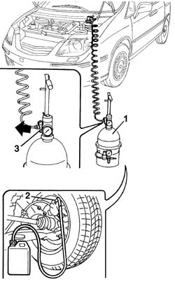

0010T65 HYDRAULIC BRAKE SYSTEM BLEED AIR
- Path
- Procedures > 00 MAINTENANCE > 0010 NEW VEHICLES AND MAINTENANCE > 0010T VEHICLE FLUIDS > 0010T65 HYDRAULIC BRAKE SYSTEM BLEED AIR
- Kind
- repair procedure (removal / refitting; the operation number is the code)
- Applies to
- all engines; all production periods
- Interactive page
- https://sloeber94.github.io/elrnDB-fUlss/en/#/179006824
Applies to: engines: 3.0 24V V6; all production periods
Position the vehicle on the lift.
Check that the brake/clutch fluid is between the MIN and MAX levels.
- If bleeding following repairs to the brake pump and/or ABS control unit, bleed in the following order:
- Right rear wheel;
- Left rear wheel;
- Right front wheel (wheel side bleed screw);
- Right front wheel (shock absorber side bleed screw);
- Left front wheel (wheel side bleed screw);
- Following operations on the brake calipers, bleed in the following order:
- Brake caliper removed.
- Right rear wheel;
- Left rear wheel;
- Right front wheel (wheel side bleed screw);
- Right front wheel (shock absorber side bleed screw);
- Left front wheel (wheel side bleed screw);
- Left front wheel (shock absorber side bleed screw);
- If bleeding following repairs to the brake pump and/or ABS control unit, bleed in the following order:
Left front wheel.
Right front wheel.
Left rear wheel.
Right rear wheel.
- Following operations on the brake calipers, bleed in the following order:
Brake caliper removed.
Left front wheel.
Right front wheel.
Left rear wheel.
Right rear wheel.
1. Remove the brake fluid reservoir cap and connect the equipment to the reservoir after having refilled it.
Description | Code | Function | |
|---|---|---|---|
1 | Brake - clutch bleed equipment | 1.806.097.000 | Brake-clutch bleeding equipment |
- Remove the protective cap for the bleed valve on the brake caliper.
2. Connect the recovery device (pipe and reservoir) to the bleed valve(s) on the brake caliper.
Open the bleed valve.
3. Open the fluid reservoir tap slowly.
Wait for all the air in the hydraulic system to escape.
Close the bleed valve(s) on the brake caliper.
Repeat the operations described above for the remaining brake calipers.
Remove the vehicle from the lift.

Topics that link to this page (16)
- 0010T66 MANUAL GEARBOX OIL CHECK LEVEL AND TOP UP IF NECESSARY
- 3310A30 FRONT BRAKE CALIPER ONE R R
- 3310B34 REAR BRAKE CALIPERS - R + R - INCLUDES HANDBRAKE ADJUSTMENT
- 3310B59 REAR BRAKE DISC GUARD - R R
- 3330E10 L/H OR R/H HOSE (ONE) TO FRONT BRAKE CALIPERS - R+R
- 3330E30 FLEXIBLE PIPE TO REAR BRAKE CALIPERS
- 3330E34 L/H OR R/H INTERMEDIATE HOSE (ONE) TO REAR BRAKES
- 3340A10 HYDRAULIC ABS CONTROL UNIT - R+R
- 3340B52 PUMP/CENTRAL OBS PIPE - R R
- 3340B55 CENTRAL BRAKE PIPE TO LH - R R
- 3340B56 RIGID PIPE FROM HYDRAULIC CONTROL UNIT TO RIGHT FRONT BRAKE - R.R.
- 3340B62 REAR CONNECTION CENTRAL PIPE - R R
- 3340B67 RH BRAKE CONNECTION PIPE - R R
- 3340B69 RHP BRAKE CONNECTION PIPE - R R
- 4420D10 REAR SUSPENSION AXLE - R+R INCLUDES BLEEDING
- 4420D20 REAR SUSPENSION AXLE -REPLACE- INCLUDES R+R, CHECK, PARTS TRANSFER AND BLEEDING